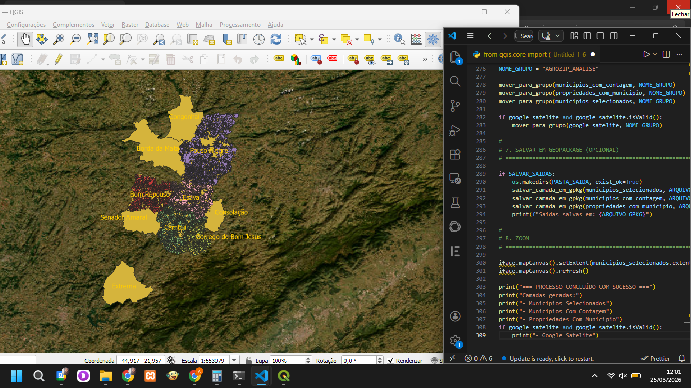

Soluções em Tecnologia
Soluções personalizadas que unem tecnologia e gestão ambiental.

Formulário Inteligente com IA
Sistema inteligente de formulários para cadastro e gestão de propriedades rurais, automatizando coleta de dados e organização.

Mapa interativo QGIS com PyQGIS
Desenvolvimento de análise espacial automatizada utilizando PyQGIS para processamento de dados do CAR e IBGE.